Surface-mount electrical accessories
Surface-mount sockets and light switches - that is, ones meant to screw directly to the wall - were the earliest kinds in use in electrical installations. This makes sense, as when electricity was still new every house would have needed to be retrofitted, and these are easier to install.
While this style of mounting fell out of fashion in favour of wall boxes shortly after WW2, especially as houses started being built already with electrical installations in place, they always were and still are available as an option. Surface-mount devices are more of an eyesore, but in certain cases they make up for it due to their flexibility and ease of installation.
Ceramic power socket
Rating: 6A 250V
This style of power socket was used in the earliest types of electrical installations. The entire device is made of ceramic, with connections made on the back and wires (generally rubber or cloth insulated) arriving from the top, with two holes for them being present.
As with most early sockets, the metal contacts here are hollow tubes, which apply no pressure to the plug. Very early plugs had solid pins that had to match perfectly to the socket, though soon after plugs with split pins were introduced, and were in use for many decades.
Because of this, most modern plugs don't fit well into this socket, and very little force is necessary to pull them out.
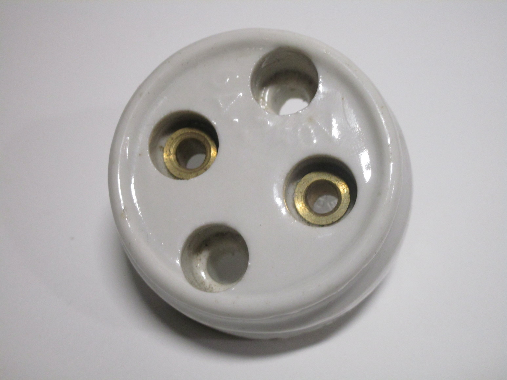{kind=link}

Ceramic light switch
Rating: 10A 250V
The light switch shown here is a good example of a very common style of mechanism in use for early light switches: instead of having some sort of lever as a control, they instead use a rotating knob, which is turned in a clockwise direction to turn the lights on or off.
While this is also found in later light switches made of bakelite, this style is mainly found on ceramic ones. The front of this one is, oddly, made of metal, with an insulating coating on the back to prevent it from becoming live.
Taking it apart is done toolessly, by rotating the knob in a counter-clockwise direction in order to unscrew it, and it's the only thing keeping the front cover in place. Of course, this is quite a dangerous design, as it makes it quite easy to access the live terminals.
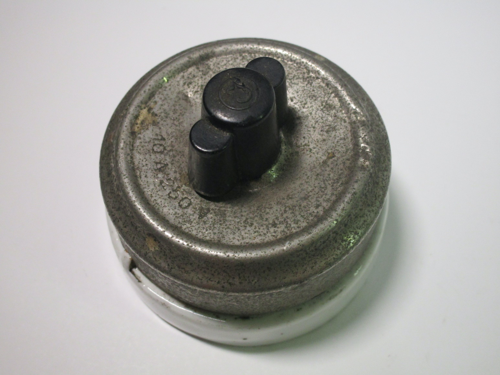 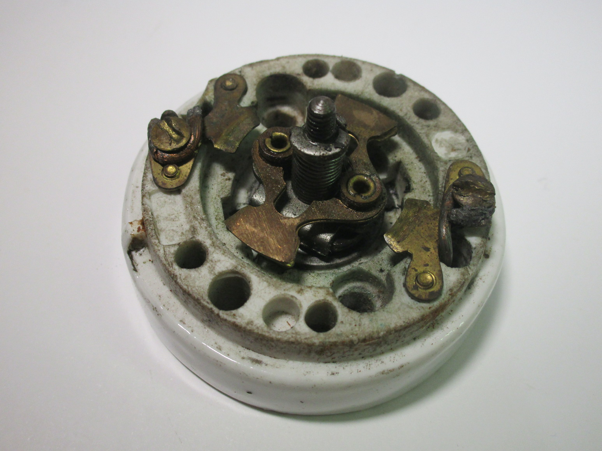 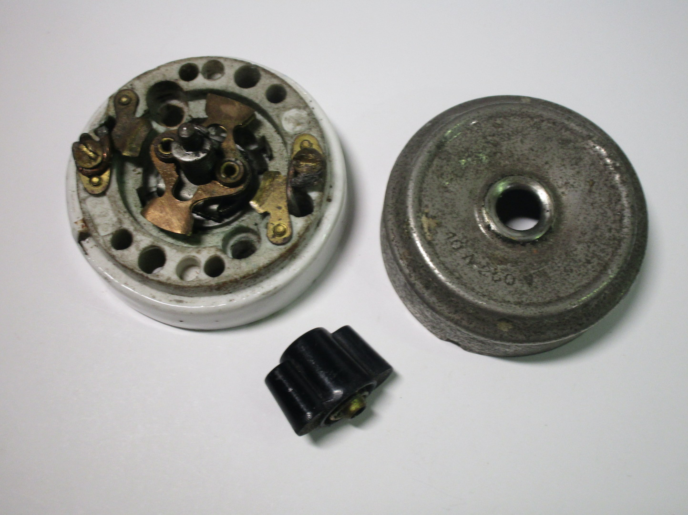{kind=link}
{kind=link}
{kind=link}
Fused power socket
Rating: 6A 250V
This power socket is quite a bit thicker than the one shown earlier: that's because it contains two rewireable fuses inside, one for each contact (a practice known as double-pole fusing, which was very common back in the day).
Fused sockets were somewhat popular in the early days of electricity, but didn't last particularly long. The idea was that you could have a single high-amperage circuit for the entire house, with individual protection at each outlet. This would have limited the inconvenience of a blown fuse, though obviously replacing a fuse on a socket next to the floor is much more inconvenient than having them all in a single location.
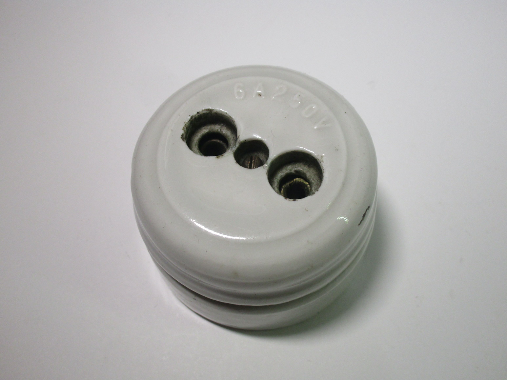 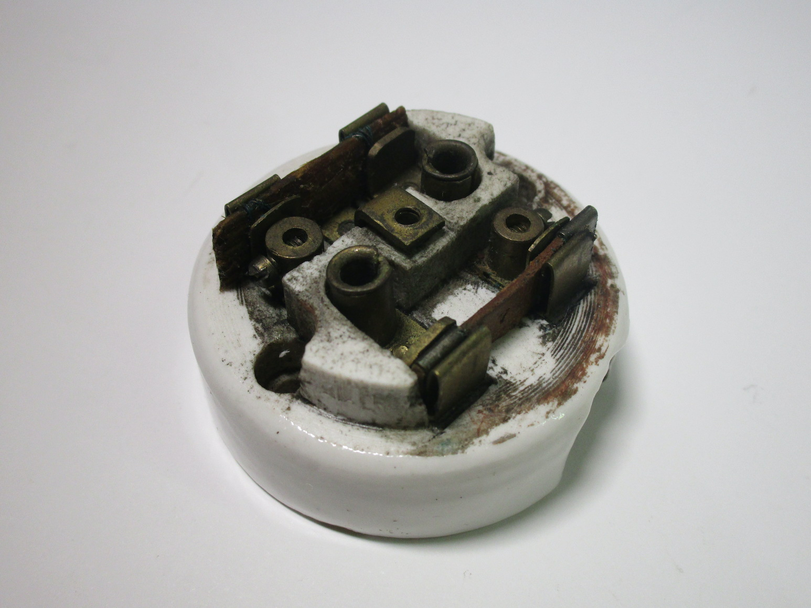{kind=link}
{kind=link}
Three-phase ceramic socket
Rating: unknown
This socket is constructed similarly to the ones shown earlier, but it's a three-phase version, designed to work with the old Italian three-phase plugs (and specifically, only the non-earthed ones).
The holes are arranged in the shape of an equilateral triangle, which means that the plug can be inserted in any way - not a problem for three-phase, of course. The smaller holes are just for the mounting screws.
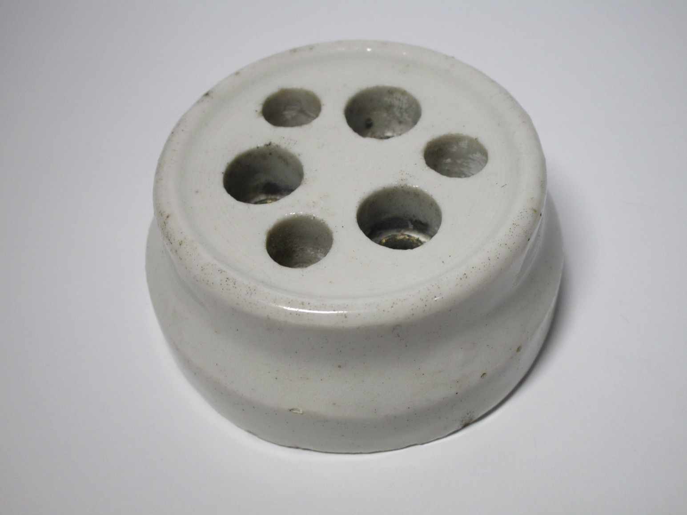 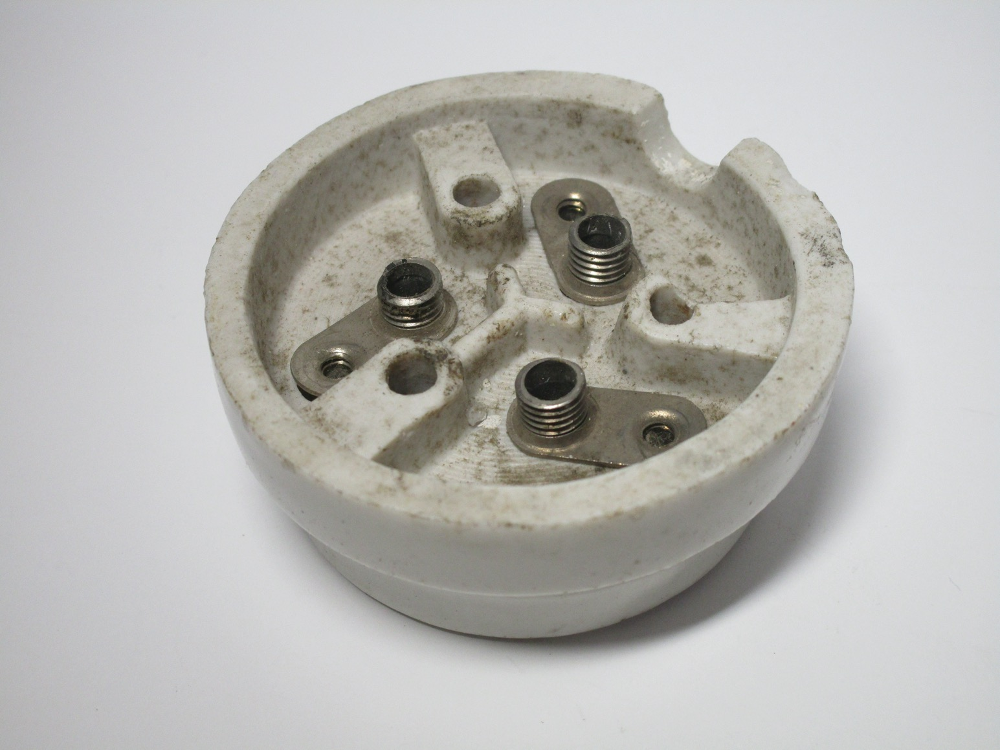 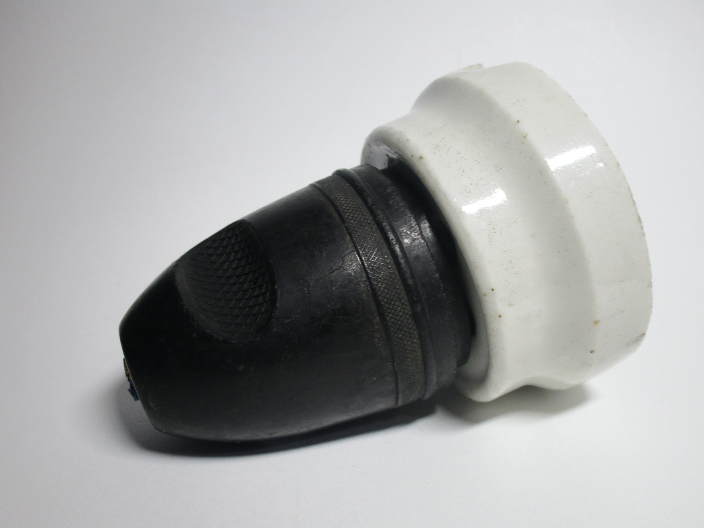{kind=link}
{kind=link}
{kind=link}
German-made bakelite light switch
Rating: 6A 250V
Lever-style light switches like this one became more common in the 50s, during the transition from surface-mount devices to ones meant to go in a wall box.
Notably, the screw terminals on this one can be accessed just by twisting the front cover, a huge safety flaw as that's very easy to do and reveals live connections that are very easy to touch.
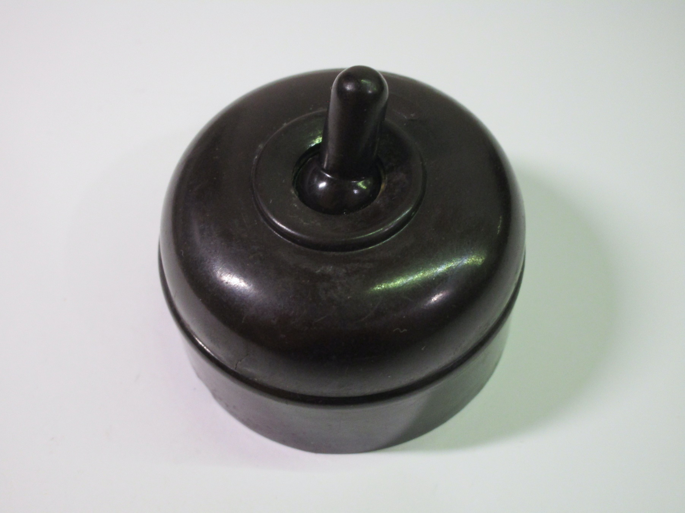 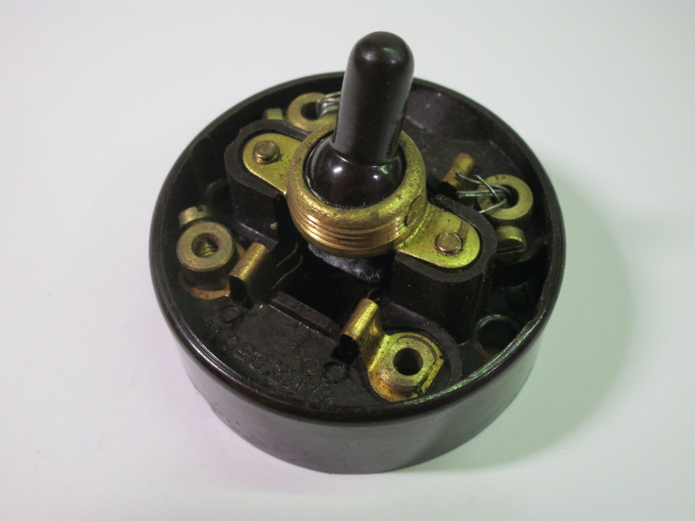{kind=link}
{kind=link}
Vimar 10A socket
Rating: 10A 250V
This is a later style of (non-earthed) surface-mount socket, made by Vimar. It's made of plastic, with a ceramic section on the back to hold the metal contacts with place, similarly to other sockets of the time. Holes have been cut out on the plastic to run wires, which at this time would have likely been early PVC single-insulated ones.
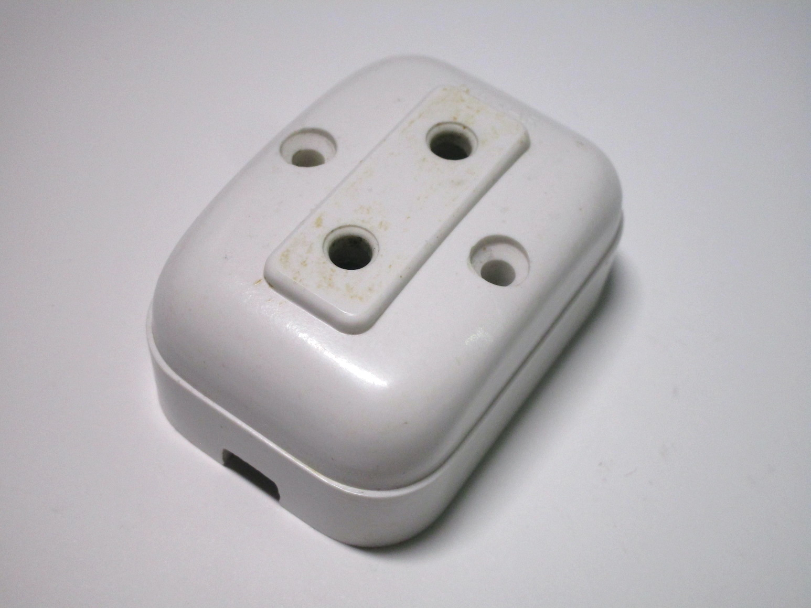 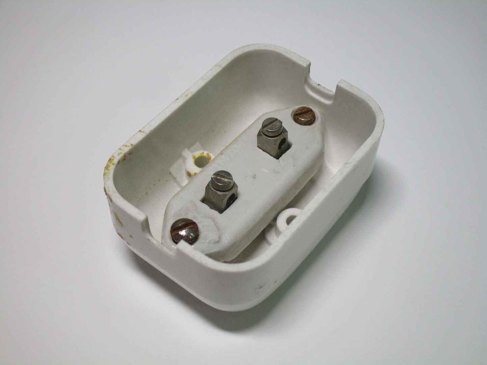{kind=link}
{kind=link}